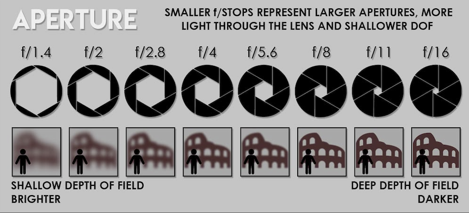
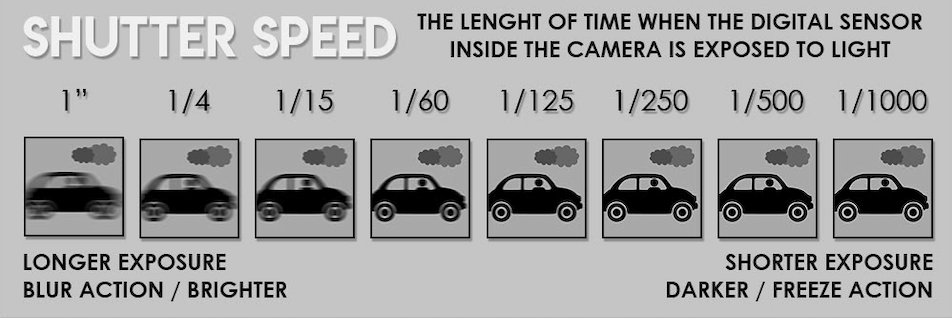
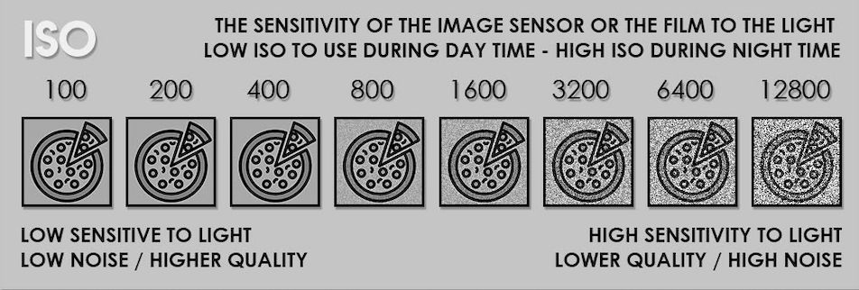

Camera Modes
How to tell your camera what you’re taking a picture of:
If you tell your camera what you’re taking a picture of, you’ll increase the odds of getting a better photo.
The way to tell your camera what you’re taking a picture of is to use the scene mode option on your camera. Scene mode covers the most popular photography situations such as landscape, portrait, close-up, sports, etc.
When you select the appropriate scene, you’re telling your camera what you’re photographing. Your camera will choose a combination of settings that are best suited to that situation. It’s going to choose roughly the same settings that an experienced photographer would use.
Sports Mode:
You can use Sports mode when photographing quick moving kids, or when you’re photographing any action. There will still be imperfections in your photos, but you’re more likely to freeze the action.
Portrait mode:
Portrait mode will help your camera achieve an out-of-focus background. That background blur is referred to as bokeh (the aesthetic quality of the blur in out-of-focus areas of a photograph, particularly in the background).
Landscape mode:
Landscape mode will favor a greater depth of field in your photo. This will keep more of the foreground, midground, and background in focus. It tends to make colors more vibrant too.
Settings

Aperture
Aperture contributes toward brightening or darkening your photo, but will also help make your background out of focus, or keep it in focus.

Shutter Speed
Shutter speed contributes toward brightening or darkening your photo, but will also help freeze the action or make your photo blurry.

ISO
ISO contributes toward brightening or darkening your photo but doesn’t really have its own creative effect.
Back to First Page